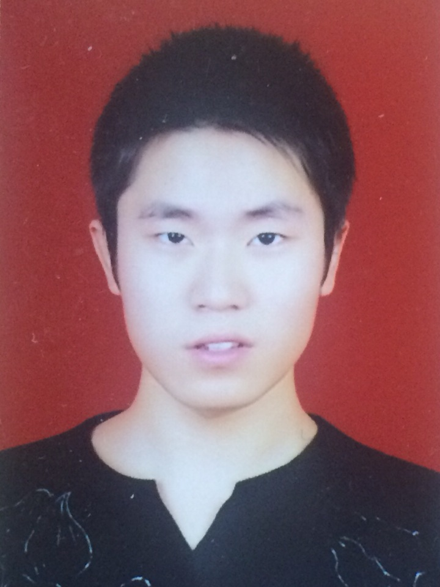
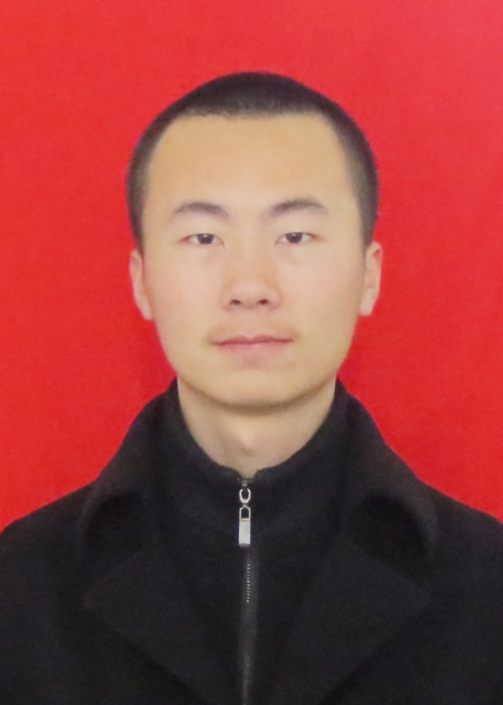
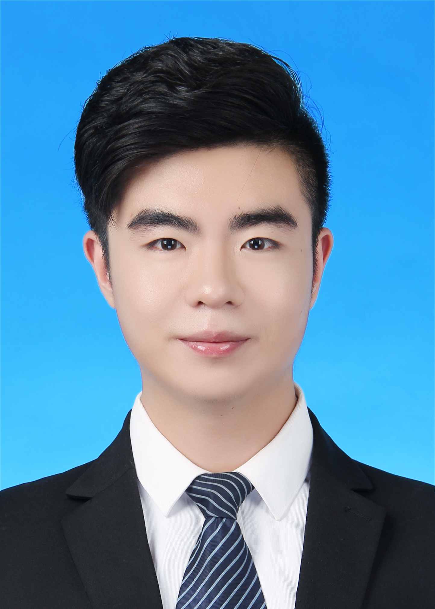

微信投票规则：
1.关注“湘潭大学三翼校园”微信公众平台（微信号：isky31)
2.输入“芙蓉学子”或者点击下方菜单栏“芙蓉学子”进入图文进行投票
3.每天每个用户在每个奖项只有一次投票机会，
4.每个奖项只能选择一个团队或个人进行投票
5.投票时间：2017年11月25日15：00——2017年11月27日15：00
6.禁止刷票，凡是刷票一律取消资格
1.关注“湘潭大学三翼校园”微信公众平台（微信号：isky31)
2.输入“芙蓉学子”或者点击下方菜单栏“芙蓉学子”进入图文进行投票
3.每天每个用户在每个奖项只有一次投票机会，
4.每个奖项只能选择一个团队或个人进行投票
5.投票时间：2017年11月25日15：00——2017年11月27日15：00
6.禁止刷票，凡是刷票一律取消资格

曾松
在专业比赛方面，获得了校级、省级及国家级重要奖项；在学术方面，参与了众多省部级和国家级课题的写作，在CSSCI核心期刊上已发表一篇文章，还有一篇待刊登；在社会实践方面，参与了企业路演融资、调研等一系列项目。
在专业比赛方面，获得了校级、省级及国家级重要奖项；在学术方面，参与了众多省部级和国家级课题的写作，在CSSCI核心期刊上已发表一篇文章，还有一篇待刊登；在社会实践方面，参与了企业路演融资、调研等一系列项目。
杨桥
我叫杨桥，来自湘潭大学法学院知识产权学院，继上次参加互联网➕创新创业大赛获奖后，我怀着忐忑的心来竞选此次“芙蓉学子·经济管理之星”。“一个对商业满怀渴望的法律人”对我是最好的诠释。法律的学习给了我一颗严谨的心，商业的头脑让我野心勃勃。希望大家可以支持我，为我投上您宝贵的一票。
我叫杨桥，来自湘潭大学法学院知识产权学院，继上次参加互联网➕创新创业大赛获奖后，我怀着忐忑的心来竞选此次“芙蓉学子·经济管理之星”。“一个对商业满怀渴望的法律人”对我是最好的诠释。法律的学习给了我一颗严谨的心，商业的头脑让我野心勃勃。希望大家可以支持我，为我投上您宝贵的一票。

刘硕
刘硕，公共管理学院，在校期间，始终致力于大学生创新创业管理服务工作，推动我校创业孵化基地建设，被评为湘潭市“创新创业示范基地”、湖南省首批省级“双创示范基地”；组织推动我校学生团队获得国家级、省级奖项近百项，并为创业学生争取扶持资金和投融资上百万元。
刘硕，公共管理学院，在校期间，始终致力于大学生创新创业管理服务工作，推动我校创业孵化基地建设，被评为湘潭市“创新创业示范基地”、湖南省首批省级“双创示范基地”；组织推动我校学生团队获得国家级、省级奖项近百项，并为创业学生争取扶持资金和投融资上百万元。
新视界传媒工作室
新视界传媒工作室与媒体、企业展开多样化的合作：第一、在行业权威期刊《销售与市场》开设“新视界”专栏，此系湖南唯一的由学生团队开设的期刊专栏。每月对市场营销和品牌传播等进行点评分析并提出建议，累计已刊出48期、22万余字。第二、代运营多个企业官方微信号，实现年创收20万元。第三、在学术期刊发表多篇经管类论文，包括校定二类和C刊。
新视界传媒工作室与媒体、企业展开多样化的合作：第一、在行业权威期刊《销售与市场》开设“新视界”专栏，此系湖南唯一的由学生团队开设的期刊专栏。每月对市场营销和品牌传播等进行点评分析并提出建议，累计已刊出48期、22万余字。第二、代运营多个企业官方微信号，实现年创收20万元。第三、在学术期刊发表多篇经管类论文，包括校定二类和C刊。

蒲松杨
蒲松杨，历史系14级国际关系班本科生，现任历史系学生会常务副主席。任外联部长期间拉取赞助总金额达2万余元，以“小团队，大赞助”创下历史系外联赞助新高，与多家名企开展资金、产品、人事等领域的深度战略合作，开创并优化历史系外联品牌。曾在政府商务局实习，参加中科集团“全球创新创业论坛”，极大地拓展了商务视野。
蒲松杨，历史系14级国际关系班本科生，现任历史系学生会常务副主席。任外联部长期间拉取赞助总金额达2万余元，以“小团队，大赞助”创下历史系外联赞助新高，与多家名企开展资金、产品、人事等领域的深度战略合作，开创并优化历史系外联品牌。曾在政府商务局实习，参加中科集团“全球创新创业论坛”，极大地拓展了商务视野。
设计+
“设计＋”团队成立于2014年，由湘潭大学艺术学院学生郝晶晶、姚丽娜、王婷组成，团队主要致力于弘扬湖南传统文化的宣传。在黎青老师和陈娟老师的指导之下积极参与社会实践相关项目研究，其中浏阳菊花石现状和未来发展研究是团队主要研究项目。
“设计＋”团队成立于2014年，由湘潭大学艺术学院学生郝晶晶、姚丽娜、王婷组成，团队主要致力于弘扬湖南传统文化的宣传。在黎青老师和陈娟老师的指导之下积极参与社会实践相关项目研究，其中浏阳菊花石现状和未来发展研究是团队主要研究项目。